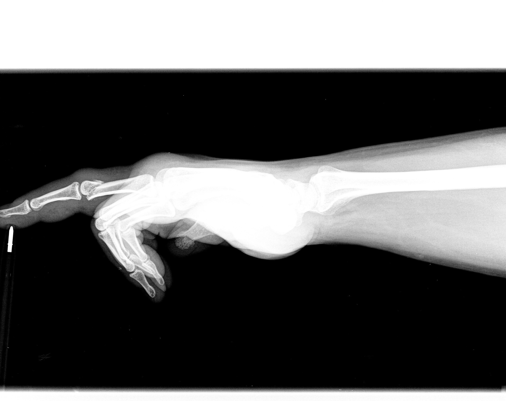

Ma méthode mesure l'angle de casse sur la radio, placer deux vis de 3cm à embouts crochu dans les deux pas de la phalange brisé, puis, l'on configure le software du robot pour replacer l'angle originel de l'os en utilisant des bras robots très précis sur au bout desquels sont fixé les embouts croché, une fois replacé la facture tant horizontalement X, verticalement Y que dans l'axe Z (rotation), on effectue dans la jonction de la facture une injection d'une substance collante organique qui permettrait au os de ce fusionné plus rapidement, dans le même temps, une fois cela fait l'on place de la résine sure le doigt pour immobiliser le doigt tout en maintenant, une fois cela fait l'on retire les deux vis verticale, puis l'on garde le doigt un mois dans la résine. Et ensuite on le guérie.
